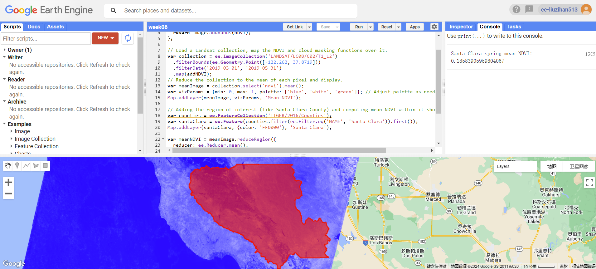
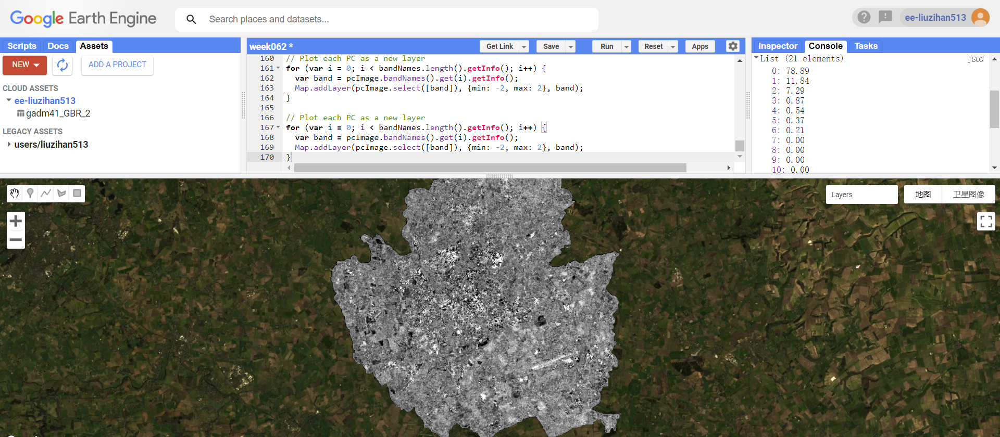

7 week_6
7.1 Summary
7.1.1 Introduction of Google Earth Engine
Google Earth Engine (GEE) is a cloud-based platform for planetary-scale environmental data analysis, provides a multi-petabyte catalog of satellite imagery and geospatial datasets with planetary-scale analysis abilities. Scientists, researchers, and developers use GEE to detect changes, map trends, and quantify differences on the Earth’s surface (Google 2023).
Google Earth Engine’s data archive contains more than 40 years of historical imagery and scientific datasets that are updated and expanded daily, we can access to high-performance computing, even from a mobile device , but requires users to code in JavaScript or Python programming languages (Earthblox 2023).
7.1.2 Basic knowledge of GEE
Raster Data: In GEE, raster data are represented as images, where each image consists of one or more bands. Each band contains values for a specific attribute (e.g., reflectance in a particular wavelength) across the covered area.
Vector Data: Vector data in GEE is represented as Features or FeatureCollections. This data type is used to represent discrete objects or areas, such as rivers, roads, boundaries, or specific points of interest.
The JavaScript API, accessible through the Code Editor, is widely used for interactive data exploration and analysis.
Scale: GEE fits data into a 256x256 pixel grid, choosing the closest pyramid layer for the analysis scale and resampling using nearest neighbor by default.
7.1.3 How we use GEE
In Google Earth Engine, typical processes include geometry operations like spatial analyses, joining datasets, and calculating zonal statistics like average temperature by area. We can filter images or values and use machine learning techniques for supervised and unsupervised classification, including deep learning with TensorFlow.
7.1.4 NDVI
As mentioned in week_3, NDVI is the instrument to measure the health of vegetable.

Value of around 0 indicates areas of bare soil or rock, urban areas, or stressed vegetation. A value of around 0.19 shown on the map in Santa Clara is in this category, suggesting that there is some vegetation present, but it is not very dense. This could be indicative of grassland, scrub, or an area where the vegetation is not very healthy.
7.1.5 PCA
PCA is a popular method used to simplify data by finding important patterns and reducing unnecessary details and noise, helps in making the data easier to work with and understand, and is used in various tasks like shrinking data size, improving data visualization, and highlighting key features (Kurita 2019).

In my case i can see that the first component explains 78.89% of the variance within the collection, suggests that most of the information in the dataset can be represented by this single principal component. The second component explains 11.84% of the variance, additional to the variance captured by the first component and gives more details that the first component might not capture.
7.2 Application
7.2.1 Application 1
Google Earth Engine (GEE) was employed to analyze land cover changes in Singapore (Sidhu et al. 2018), focusing on the Tuas industrial zone and the Central Catchment Reserve (CCR). The study aimed to evaluate GEE’s capabilities in processing raster and vector data, conducting spatial and temporal analyses, and handling big Earth Observation (EO) data.
The results indicated that GEE was effective in managing and processing large-scale satellite imagery data, providing access to diverse datasets, and facilitating spatial and temporal analyses. For Tuas, the analysis revealed rapid industrialization and land transformation, particularly through land reclamation processes. Meanwhile, in the CCR, a protected area, forest cover remained stable, largely unaffected by human activities and influenced more by natural monsoon cycles.
Overall, GEE’s robust platform supported detailed analysis of land cover changes in Singapore, demonstrating its utility for urban and environmental studies.
Compare with the use of GEE in developed modern cities, my next article will focus on the less developed agriculture areas.
7.2.2 Application 2
The research article (Xiong et al. 2017) discusses the use of Google Earth Engine (GEE) for creating automated cropland maps across Africa. Used Moderate Resolution Imaging Spectroradiometer (MODIS) normalized difference vegetation index (NDVI) data, the study produced reference cropland layers for 2014 with high accuracy (around 90% for crop extent) across different agriculture zones.
The study’s results revealed a net increase of croplands by 1 million hectares per year and a decrease in cropland with the same amount. The proportion of rain-fed cropland has also been caluculated. Seasonal analysis showed highlighting the agricultural dynamics within Africa. It demonstrated GEE’s strong capacity of analyzing extensive satellite imagery datasets, facilitatedaccurate and detailed agricultural mapping across Africa. This supports the understanding of cropland dynamics, which is essential for agricultural development and food security planning in Africa.
7.2.3 Application reflection
Google Earth Engine (GEE) has been effectively used in diverse areas, from urban land cover change analysis in Singapore to large-scale agricultural mapping in Africa. In Singapore, GEE facilitated detailed studies of industrialization and natural reserves, while in Africa, it supported cropland monitoring. These applications highlighted GEE’s capacity to manage satellite imagery datasets as well as spatial and temporal analyses across different scales and contexts. As a powerful tool for environmental monitoring, agricultural development, and many other areas, GEE may play more and more important role in urban planning.
7.3 Reflection
Reflecting on my study of Google Earth Engine, I have understood its ability in environmental data analysis. GEE can process and analyze massive datasets, its ability of analyzing satellite imagery and geospatial datasets gave me the idea of how important and efficient a cloud-based platform can be used to understand and manage Earth’s complexities.
What I am interested in the most is the diversity of applications GEE supports, evidenced by the case studies in Singapore and Africa. It can give us a comprehensive understanding of the temporal and spatial changes of not only developed cities but also less developed places.
GEE integrates various data types, from raster to vector, and support large amount of picture analysis techniques like NDVI and PCA. These complex processes can be managed from a simple web browser and we can see the processes on the map, the visibility is much better than simply doing processes via R studio.
Before, I just used google map to view the details on the map (buildings, transportation, etc..) but on google earth engine I can do more analyzes, which is a new and interesting try.